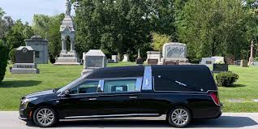
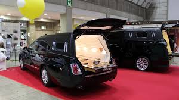
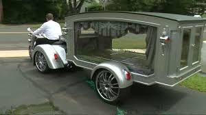

| Home | Gallery | Market | Info |
Home page |
Grave mistake is a company built specifcally for hearses. Our soul purpose is to create hearses meant for any occasion. Funeral on the beach, funeral on the go, funeral underwater, you name it, we have a hearse for you. It started as a way for people to have access to hearses but any car company can do that so we moved to different varietys of hearses. For when that special someone wants to go out in style just remember. We put the Fun back in funeral. |
|  |